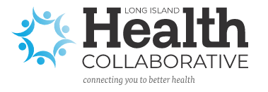
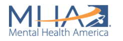
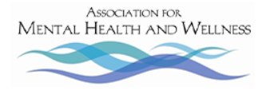
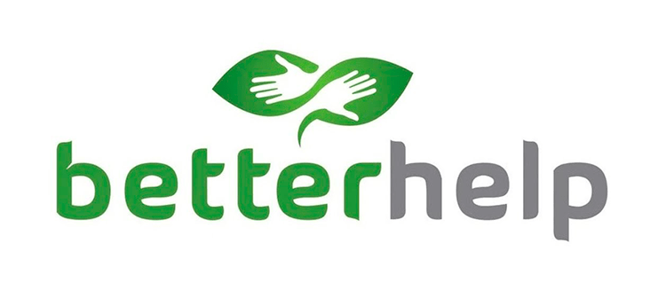

Hello, welcome to our resources page! This is our hub for all resources mental health related. Although we can not directly assist anyone with specific mental health problems, we have compiled a list of the best places that can!
Organizations:
Long Island Health Collaborative:
Long Island Health Collabortive is one of the largest hubs for mental health facilites on Long Island. They serve to connect you to the proper facilities you need,
whether it be substance abuse help or mental health counseling. You can create an account and annonymously find the proper help you need. You can also contact the team
directly and be recommended a specific facility. Click on the image below to check them out!

Mental Health America:
Mental Health America is an organization dedicated to providing local resources on a large scale.
MHA has an affiliate network of over 200 mental health organizations that work to influence public policy
and ensure access to treatment for millions of Americans. Their Substance Abuse Treatment Facility Locator
can help you find the appropriate resources near you. They also have a crisis support hotline which can be found on their website.
Click on the image below to be redirected to their website now!

Association for Mental Health and Wellness:
The Association for Mental Health and Wellness provides education and resources to citizens of Suffolk County, Long Island.
They were founded in 2013 and provide peer and family services, care management and coordination, and home and community based
services. They als specialize in community outreach. Pleae visis their website by clicking on the image below!

Better Help:
Better Help is an organization dedicated to helping people find the therapy they need. They offer therapy specifically for teenagers.
With Better Help, you get to pick who you want to talk to and when. You have total control. Better help can connect you with a licensed
therapist that fits your needs and desires, and you have the option to attend therapy virtually as well! Find a therapist that fits you by clicking on
the image below!

Society for Adolescent Health and Medicine:
Society for Adolescent Health and Medicine is a service dedicated to providing adolescents with mental health
resources, like Minds for Minds! They provide youth friendly mental health online resources to anyone that needs, including
mental health apps and tech services, mental health resource institutes, and mental health medication guides. They also provide information for
hotlines as well as advocacy opportunities. Click on their logo below to be redirected to their website!
Hotline phone numbers:
National Suicide Prevention Lifeline: 1-800-273-TALK (8255)
SAMHSA Treatment Referral Helpline: 1-877-SAMHSA7 (1-877-726-4727)
NAMI HelpLine: 1-800-950-NAMI (6264)
Mental Health America Hotline: Text MHA to 741741
Crisis Text Line: Text CONNECT to 741741.